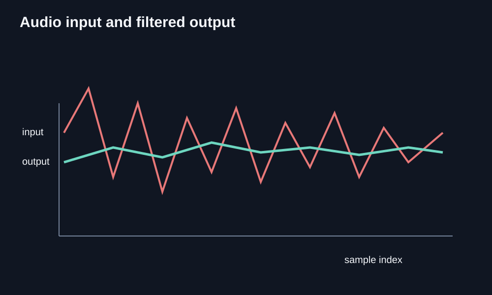
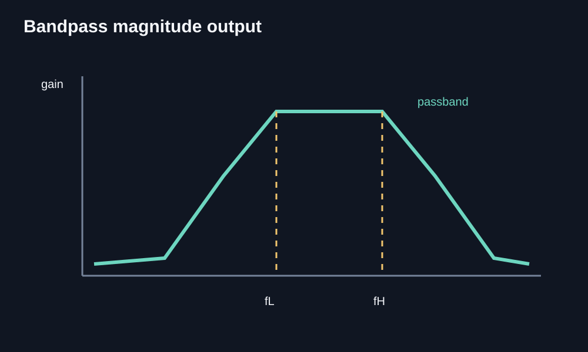
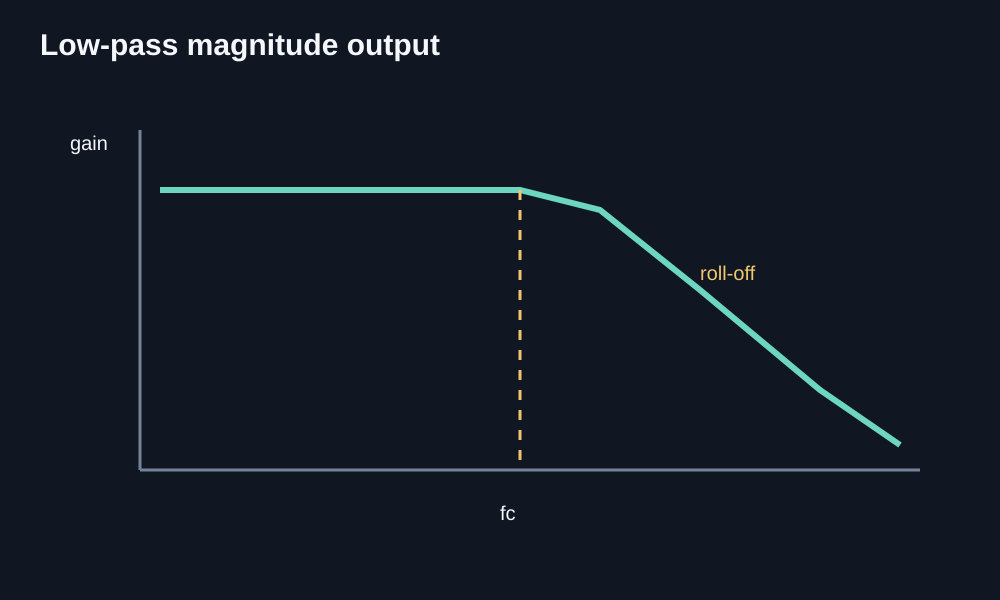
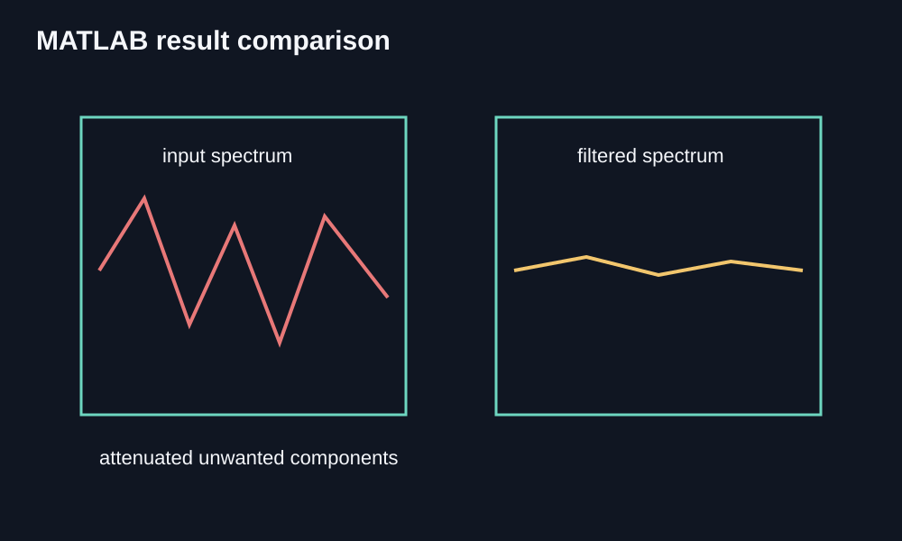

Audio Signal Filtering
I designed bandpass and low-pass filters in MATLAB to process and clean up audio signals.
Recreated technical plots and block diagrams for the MATLAB workflow. They show the signal-processing method and expected filter behavior, not fabricated measurements from an unavailable dataset.




Audio input and filtered output comparison
Bandpass magnitude response output
Low-pass magnitude response output
MATLAB result comparison
About this project
I used MATLAB to design bandpass and low-pass filters for audio signals. The project gave me a way to apply filter design beyond the equations we study in class.
Working with audio helped me connect the purpose of each filter to the signal it was processing. This was a MATLAB-based project rather than a physical filter-circuit build.
What it does
- Bandpass filter design
- Low pass filter design
- Audio signal processing in MATLAB